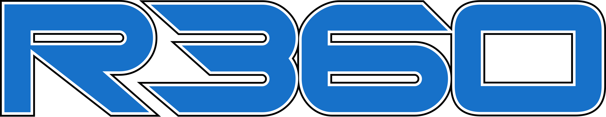
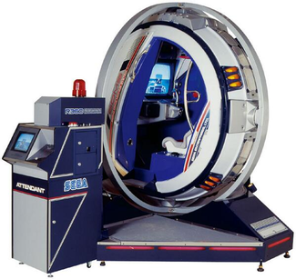

Sega R360
The arcade cabinet that barrel-rolled with you inside
Overview
The R360 is a motion-based arcade cabinet produced by Sega and released in Japan in November 1990. Short for "Rotate 360," the R360 is a gyroscopic motion simulator capable of rotating a full 360 degrees on two axes, physically orienting the player's body to match in-game vehicle attitude — including complete inversion. The player is strapped into a four-point safety harness inside an enclosed fiberglass cockpit suspended within a gimbal ring. Two 1.5 kW AC servo motors per axis provide motion up to 2Gs. The cabinet weighs 1,100 kg (2,200 lbs), stands 2.4 meters tall, and required a 4.5m × 4.5m installation area with a safety fence and dedicated attendant tower. Two games were officially released: G-LOC: Air Battle (1990) and Wing War (1994, requiring two linked cabinets). Players could select an "experience" mode that ran the demo while the cockpit moved — a ride, not a game. With an estimated 100–200 units produced at a cost of approximately $90,000 each (£70,000 in the UK), the R360 was a commercial failure that only the largest arcade operators could afford.
### Deep Dive
Origins. The R360 was designed by Sega AM2, the legendary development studio led by Yu Suzuki that created Hang-On, Space Harrier, Out Run, After Burner, and Virtua Fighter. Mechanical engineers Masao Yoshimoto and Masaki Matsuno led the hardware design, with electrical engineering by Futoshi Ito. The R360 was part of Sega's broader strategy to create attraction-like "taikan" (body sensation) games for Japanese amusement centers — cabinets that were destinations in themselves. It was first tested in Sega's Tokyo arcades in early 1990 and exhibited internationally at the UK's Amusement Trades Exhibition International in 1991.
Safety as interaction design. The R360's safety systems are an extraordinary case study in the collision between interface ambition and biological limits. The cabinet incorporated: a four-point safety harness; light sensors that would automatically stop the machine if a player extended an arm or leg outside the cockpit (which caused problems when the R360 sat in direct sunlight); two emergency stop buttons (one inside the cockpit, one on the attendant tower); a sensor grid that triggered an alarm if anyone approached the moving assembly; and a mandatory safety fence. Sega's official warnings barred use by anyone with heart conditions, high or low blood pressure, pregnancy, intoxication, or "mental or physical problems." British magazine The One noted the motion sickness but still called it "the greatest sensory overload you are ever likely to get without taking your trousers off." At London's Trocadero, a single ride cost £3 in 1991.
Kinesthetic HCI at the extreme. The R360 represents the theoretical endpoint of mechanical whole-body kinesthetic output in a commercial interface. All in-game physics — pitch, roll, yaw — transposed directly onto the player's physical orientation through direct-drive servo motors. The cabinet did not simulate motion; it performed it. The player's body became payload, carried through the same physical trajectory as the on-screen vehicle. The machine's failure was inseparable from its ambition: it was too expensive to buy ($90,000), too complex to maintain (Sega did not include schematics, and the circuitry was prone to failure), and too physically demanding to play casually. It required a 3-phase industrial power supply and a trained attendant at all times. In HCI terms, the R360 demonstrates that perfect kinesthetic fidelity is not always desirable — the human body has limits, and exceeding them makes an interface unusable.
Legacy. Retired within a few years, the R360 became a cult artifact. Retro Gamer magazine called it "the pinnacle of what could be achieved in videogames at the time" and said it "shows the dominance Sega had in the industry." A spiritual successor, the R360Z, was introduced by Sega in 2015 at Tokyo Joypolis for Transformers: Human Alliance, seating two passengers. The R360's core idea — direct mechanical transposition of game physics onto player orientation — remains unmatched in any consumer-grade device.
Deep dive
Media

